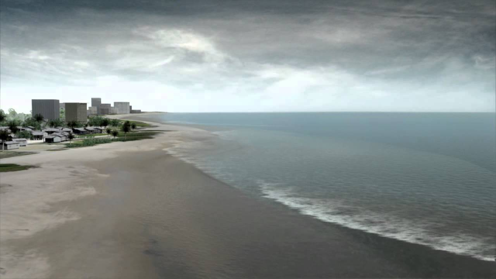

How to Survive a Tsunami
A tsunami is a series of potent and perilous waves that are usually caused by earthquakes and underwater disturbances. If your home is in a place where earthquakes often occur, it's important to know what to do when a Tsunami shows up. Don't worry, We got you covered!
Tsunami Preparedness
Be Tsunami Smart: Recognize the natural signs
- ✔ Feel
- ✔ See
- ✔ Hear
How to Prepare for a Tsunami
Consider these steps before, during, and after a tsunami:
Before a Tsunami
- Determine if your home is in a vulnerable zone near the coastline.
- Know the quickest route to higher ground if you live near the beach or in low-lying areas.
- Ensure everyone in your family knows how to recognize tsunami signs.
- Keep emergency supplies like food, medicine, flashlights, radios, water, and first aid kits ready.
During a Tsunami
- If in a tsunami-prone area during an earthquake, prioritize personal safety by dropping, covering, and holding onto sturdy furniture.
- Move to higher ground immediately upon noticing natural signs or receiving official warnings.
- Stay put if outside the tsunami zone and warned, but leave promptly if instructed.
- If in water, grab onto floating objects like rafts or tree trunks.
- In a boat, face the waves and sail away from the coast; in a harbor, head inland.
After a Tsunami
- Listen to local alerts and obey authorities' instructions regarding safe areas and shelter locations.
- Reserve phone calls for emergencies and use text messages or social media for communication.
- Avoid walking through floodwater, which may contain hazardous debris and be deeper than it appears.
- Beware of electrocution risks from fallen power lines; avoid touching wet electrical equipment.
- Avoid damaged buildings, roads, and bridges.
- If injured, contact healthcare providers and seek shelter; call 9-1-1 for emergencies.